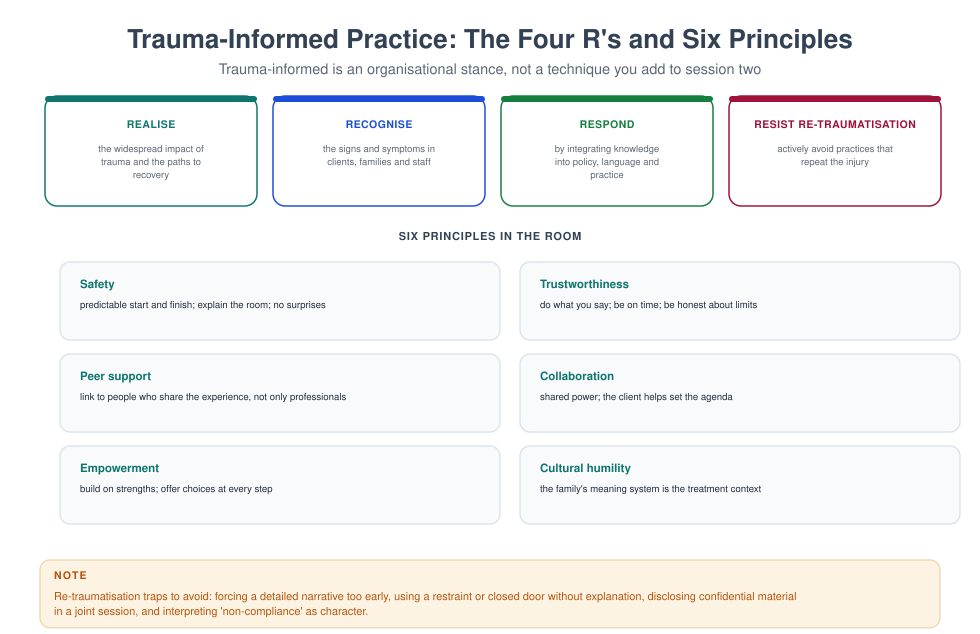

MFT 714 — Trauma-Informed Care
Course leader's summary. Trauma changes the body, the memory, the attachment system and the family. This course teaches the physiology, the phased treatment models, and the organisational stance — and it teaches you to avoid the two commonest errors: doing too much too soon, and doing nothing at all.
How to use this book
This is the most personally demanding book in the programme. Announce it in advance to your peers; know your own history; use supervision; and do not read the trauma chapters late at night. The material is presented in the order treatment unfolds: safety, then processing, then integration.
1. Course description
Trauma-informed care means organising practice around the prevalence and impact of trauma; trauma- specific care means delivering interventions designed to treat it. You need both.
The course covers: definitions and types of trauma; the Adverse Childhood Experiences evidence; the neurobiology of threat and regulation; dissociation; attachment and developmental trauma; the phased model; specific modalities (TF-CBT, EMDR, narrative exposure, somatic approaches); family and couple work with trauma; intergenerational transmission; re-traumatisation in services; and practitioner self-protection.
2. Learning outcomes
| # | Outcome | Assessed |
|---|---|---|
| LO1 | Define trauma and distinguish types, including complex and developmental trauma | Exam |
| LO2 | Explain the neurobiology of threat, regulation and memory | Exam |
| LO3 | Conduct a trauma-informed assessment without re-traumatising | Observed assessment |
| LO4 | Apply a phased treatment model and justify the sequencing | Case study |
| LO5 | Use at least two trauma-specific interventions under supervision | Skills test |
| LO6 | Work systemically with trauma in couples and families | Case study |
| LO7 | Design trauma-informed organisational practices | Report |
3. Assessment
| Component | Weight | Due |
|---|---|---|
| Trauma-informed assessment observed (40 min) | 25% | Week 7 |
| Phased treatment plan (2,500 words) | 35% | Week 12 |
| Trauma-informed service audit report (2,000 words) | 20% | Week 14 |
| Examination | 20% | Week 16 |
4. The fifteen-week plan
| Week | Topic | Practical |
|---|---|---|
| 1 | What trauma is: single, complex, developmental, collective | Typology exercise |
| 2 | The ACE evidence and its limits | ACE discussion (with care) |
| 3 | Neurobiology I: threat, arousal and the window of tolerance | Regulation skills lab |
| 4 | Neurobiology II: memory, dissociation and the body | Grounding practice |
| 5 | Attachment and developmental trauma | Attachment-informed formulation |
| 6 | Trauma-informed assessment | Structured interview |
| 7 | Observed assessment | Assessed |
| 8 | The phased model: safety, processing, integration | Phase planning |
| 9 | Trauma-focused CBT with children and families | TF-CBT component practice |
| 10 | EMDR, narrative exposure and somatic approaches | Comparison and critique |
| 11 | Couples and trauma: betrayal, violence, and the repair of trust | Couple session design |
| 12 | Treatment plan due; intergenerational transmission | Genogram of trauma |
| 13 | Re-traumatisation in services; the four R's | Service audit |
| 14 | Service audit due; vicarious trauma and supervision | Personal resilience plan |
| 15 | Integration: what trauma-informed care is not | Case presentations |
Week 1 — What trauma is
Definition (DSM-5/ICD-11, paraphrased). Exposure to actual or threatened death, serious injury or sexual violence, whether experienced directly, witnessed, learned about in relation to a close person, or through repeated occupational exposure.
Types.
| Type | Description | Example |
|---|---|---|
| Single-incident | One event, adult onset | Road traffic collision, armed robbery |
| Complex | Repeated, prolonged, interpersonal, inescapable | Domestic abuse, childhood abuse |
| Developmental | Occurs during maturation; shapes personality and attachment | Chronic neglect, chaotic caregiving |
| Collective | Shared by a community | War, displacement, massacre, epidemic |
| Vicarious / secondary | Exposure through another's trauma | Therapist, first responder, family carer |
What makes an event traumatic is not only the event. It is the event plus the meaning, the interpersonal context (was it caused by someone who was supposed to protect you?), the aftermath (was the person believed? supported?), and prior vulnerability.
Complex PTSD (ICD-11) comprises three additional clusters beyond classic PTSD: affect dysregulation, negative self-concept, and disturbances in relationships. This matters clinically: classic PTSD responds well to exposure-based treatment; complex PTSD usually requires a longer stabilisation phase.
Week 2 — The ACE evidence
The original study. Adverse Childhood Experiences (abuse, neglect, household dysfunction) were found to have a graded relationship with later health outcomes, including depression, addiction, suicide attempts, heart disease and early death.
What it established. Early adversity is common, cumulative, and biologically embedded. It shifted the field from asking "what is wrong with you?" to "what happened to you?"
What it does not establish. That ACE scores are destiny; that any individual's future is determined; or that a high score is a diagnosis. Roughly a third of people with high ACE scores have no significant impairment — protective relationships matter enormously.
The clinical use. ACE enquiry is a conversation, not a score: "Was there anything difficult in your childhood that we should know about? You do not have to give details."
Week 3 — Neurobiology I: the window of tolerance

The three states.
- Within the window: the person can think, feel, choose, connect and learn.
- Hyperarousal: fight/flight — panic, rage, hypervigilance, intrusive images, restlessness.
- Hypoarousal: freeze/collapse — numbness, dissociation, shutdown, shame, exhaustion.
Trauma narrows the window. Small triggers produce large reactions; the person's capacity to stay relational shrinks. This is not "over-reacting"; it is a nervous system doing what it learned.
Regulation skills to teach (and use in session).
- Paced breathing — exhale longer than inhale (4 in, 6 out) for 90 seconds.
- Orienting — look around the room and name five things you can see.
- Grounding — feet on the floor, weight in the chair, describe the texture of an object.
- Movement — stand, walk, stretch; discharge the mobilised energy.
- Temperature and touch — cold water, a heavy blanket, pressure.
- Naming — "I am having a memory, not the event."

In family sessions. If one member leaves the window, the session has ended for them. Pause, regulate, and return. Teaching a couple to recognise each other's early signals is itself an intervention.
Week 4 — Neurobiology II: memory, dissociation, the body
Traumatic memory is different. It is often implicit, sensory and fragmented: smells, images, body sensations, without a coherent narrative or a sense of "pastness". This is why "just talk about it" can flood a person and why containment matters.

Dissociation — a disruption of consciousness, memory, identity or perception. Mild forms are common (going blank, feeling unreal); severe forms include depersonalisation, derealisation and dissociative amnesia. Assess gently: "Do you ever feel like you are watching yourself from outside? Do you lose time?"
The clinical rule. Do not interpret a dissociative response as resistance. If a client's eyes glaze, stop the exercise, orient them to the room, and slow down. Then shorten the next segment.
Week 5 — Attachment and developmental trauma
Developmental trauma (sometimes "complex relational trauma") occurs when the person who should provide safety is the source of danger. The child adapts with strategies that later look like personality: vigilance, people-pleasing, aggression, emotional shutdown, compulsive caregiving.
The internal working model. "I am unlovable; others are dangerous or unreliable; I must manage alone (or never let go)." These beliefs are not irrational; they were accurate in the original environment.
Clinical implications.
- Expect the therapeutic relationship to be tested — idealisation, devaluation, testing, sudden withdrawal.
- Predictability and reliability matter more than technique.
- Repair after rupture is the treatment, not a distraction from it.
- Do not interpret the transference early; be the relationship first.
Family application. Parents with their own unresolved trauma often misread their children's ordinary behaviour as threat. Psychoeducation about trauma and parenting can reduce harsh discipline dramatically.
Week 6 — Trauma-informed assessment
The four R's (SAMHSA).

- Realise the widespread impact of trauma.
- Recognise the signs and symptoms.
- Respond by integrating knowledge into practice and policy.
- Resist re-traumatisation.
Assessment principles.
- Explain why you are asking, and offer choices ("you can skip any question").
- Ask about the event only at the level of detail needed for formulation; detail belongs in processing.
- Ask about strengths, survival strategies and meaning, not only symptoms.
- Screen for dissociation before any trauma-focused work.
- Screen for current safety (violence, self-harm, substance use).
Instruments. PCL-5 (PTSD symptoms), IES-R, CTQ (childhood trauma; use with care), DES-II (dissociation), PHQ-9, AUDIT. Always follow up a positive screen with a conversation.
Week 7 — Observed trauma-informed assessment
Forty minutes. Assessed on: safety and choice throughout, pacing, grounding as needed, formulation without premature interpretation, and accurate risk screening.
Week 8 — The phased model
Phase 1: Safety and stabilisation. Establish safety, build the alliance, teach regulation, address practical dangers (housing, violence, substance use), and develop what Herman called "the capacity to contain".
Phase 2: Processing. Work through the traumatic material using a validated method (TF-CBT, EMDR, narrative exposure, prolonged exposure) — only when the person can tolerate it and has stabilisation skills.
Phase 3: Integration and reconnection. Rebuild identity, relationships, work, and meaning. This phase is often the longest and the most neglected.
Why sequence matters. Processing without stabilisation produces flooding, drop-out, and sometimes retraumatisation. Stabilisation without processing can produce a stable but constrained life. The judgment is clinical, not clerical: some people need two sessions of stabilisation; some need twenty.
Family application. The family's safety and stability is Phase 1 at the system level. You cannot do trauma processing in a household where the perpetrator is still present.
Week 9 — Trauma-focused CBT with children
TF-CBT (Cohen, Mannarino & Deblinger) is the best-evidenced treatment for childhood trauma. Its PRACTICE components:
| Component | Content |
|---|---|
| Psychoeducation and parenting skills | Trauma responses; consistent, non-punitive discipline |
| Relaxation | Breathing, muscle relaxation, grounding |
| Affect expression and modulation | Feelings identification, coping |
| Cognitive processing | Correcting trauma-related beliefs ("it was my fault") |
| Trauma narrative | Gradual, structured account in the child's medium (book, drawing) |
| In vivo mastery | Facing avoided, safe situations |
| Conjoint sessions | Child shares the narrative with the caregiver |
| Enhancing safety | Safety skills and planning for the future |
The caregiver's role is essential. The non-offending caregiver's belief, protection and support is the strongest predictor of recovery. Work with them in parallel.
Week 10 — Other trauma-specific modalities
| Modality | Mechanism | Evidence | Cautions |
|---|---|---|---|
| EMDR | Bilateral stimulation during memory recall | Strong for PTSD | Requires training; not a magic technique |
| Narrative exposure therapy | Chronological testimony of the whole life | Strong for multiple/collective trauma | Can be destabilising without stabilisation |
| Prolonged exposure | Repeated imaginal and in vivo exposure | Strong | Drop-out; requires strong alliance |
| Somatic approaches | Body-based regulation and discharge | Emerging evidence | Beware of unfounded claims |
| Yoga / mindful movement | Regulation, interoception | Good adjunctive evidence | Not a substitute for trauma processing |
The professional duty. Use what you are trained and supervised to use. A half-learned trauma protocol is more dangerous than a well-delivered stabilisation phase.
Week 11 — Couples and trauma
Three presentations.
- One partner has a trauma history. The other becomes a de facto carer; intimacy becomes a trigger; the couple's sexual relationship collapses. Work with both: psychoeducation for the partner, boundaries for the survivor, and a paced intimacy plan.
- The trauma happened inside the relationship (betrayal, violence, coercion). This is betrayal trauma. Safety and accountability come first; joint work only where the offending partner acknowledges the harm and the victim chooses it.
- Both partners are trauma survivors. Two dysregulated nervous systems in one room. The pace must be slower, the structure tighter, and the regulation explicit.
The couple-level formulation. "When she freezes, he experiences rejection and pursues; when he pursues, she freezes harder. The loop is a collision of two survival strategies, not a failure of love."
Week 12 — Intergenerational transmission
Mechanisms. Parenting behaviour (frightening, inconsistent, harsh), attachment patterns, family narrative, epigenetic and stress-physiology effects, and structural factors (poverty, displacement, community violence).
The genogram of trauma. Draw three generations and mark losses, violence, separation, migration, untimely deaths and secrets. Then ask: what was never spoken about? What did each generation have to survive?

The hopeful finding. Transmission is probabilistic, not deterministic. A consistent, protective relationship at any point breaks the chain. Your therapy may be that relationship.
Week 13 — Re-traumatisation in services
How services re-traumatise, usually without meaning to.
| Practice | Why it harms | Alternative |
|---|---|---|
| Restraint without explanation | Replicates powerlessness | Explain, offer choices, debrief |
| Closed doors, no warning | Replicates entrapment | Predictability, warnings, exits |
| Being asked to repeat the story to every professional | Replicates helplessness | Record once, share with consent |
| Long waits in public areas | Replicates exposure | Private, quiet space |
| Disclosing in front of a partner | Replicates danger | Always screen individually |
| "Non-compliance" language | Replicates blame | "What got in the way?" |
The organisational standard. Trauma-informed care is a policy and management issue: staff training, physical environment, restraint policy, complaint routes, and supervision. A trauma-informed clinician in a trauma-organised service will burn out.
Week 14 — Vicarious trauma
Distinguish three concepts. Burnout (exhaustion from workload), compassion fatigue (reduced empathy), and vicarious trauma (changes to the therapist's beliefs and inner world from exposure to others' trauma).
Signs. Intrusion of clients' material, nightmares, cynicism, loss of hope, changed worldview ("the world is unsafe"), avoidance of trauma cases, over-involvement.
Protection. Supervision that addresses the work's emotional impact; caseload diversity; clear boundaries; your own therapy; sleep, exercise and relationships; and acknowledging meaning — many clinicians find that sustained trauma work deepens their sense of purpose when it is properly supported.
Week 15 — What trauma-informed care is not
It is not the avoidance of difficult material. It is not an excuse for never processing trauma. It is not a synonym for "be gentle". It is a disciplined sequencing of safety, processing and integration, delivered in a relationship and an organisation that do not repeat the injury.
Glossary
Adverse childhood experiences (ACEs) — potentially traumatic events in childhood, measured cumulatively. Betrayal trauma — trauma caused by someone on whom the person depends. Complex PTSD — PTSD plus affect dysregulation, negative self-concept and relational disturbance. Dissociation — disruption of consciousness, memory, identity or perception. Grounding — techniques that return attention to the present and the body. Re-traumatisation — repetition of the dynamics of the original trauma in the therapy or service. Stabilisation — the first phase of trauma treatment, focused on safety and regulation. Window of tolerance — the arousal range within which a person can think and connect.
Self-assessment
Multiple choice
1. Complex PTSD is distinguished by: (a) one event (b) affect dysregulation, negative self-concept, relational disturbance (c) psychosis (d) amnesia only
2. The first phase of trauma treatment is: (a) processing (b) safety and stabilisation (c) integration (d) exposure
3. Dissociation should first be: (a) interpreted (b) assessed and accommodated (c) ignored (d) challenged
4. TF-CBT's trauma narrative is: (a) forced in session one (b) gradual and structured, in the child's medium (c) written by the therapist (d) optional and never used
5. The strongest predictor of recovery in childhood trauma is: (a) the trauma's severity (b) a believing, protective caregiver (c) IQ (d) medication
6. Vicarious trauma is: (a) the same as burnout (b) changes to the therapist's beliefs and inner world from exposure (c) a diagnosis (d) avoidable by holidays
7. Re-traumatisation in services often occurs through: (a) privacy (b) predictability (c) restraint without explanation (d) choice
8. Processing trauma without stabilisation risks: (a) faster recovery (b) flooding and drop-out (c) improved alliance (d) no effect
9. Intergenerational transmission is: (a) deterministic (b) probabilistic and can be interrupted (c) genetic only (d) irrelevant
10. A trauma-informed organisation is characterised by: (a) only individual therapy (b) policy, environment, training and supervision aligned with trauma knowledge (c) shorter sessions (d) avoiding trauma discussion
Answer key
1 b · 2 b · 3 b · 4 b · 5 b · 6 b · 7 c · 8 b · 9 b · 10 b
Short answer
- Distinguish complex PTSD from classic PTSD.
- Describe three regulation skills and when you would use each.
- Name the four R's of trauma-informed care.
- Give the three phases of trauma treatment with the task of each.
- List four ways services re-traumatise clients and one alternative for each.
Essay (choose one, 2,000 words)
- "Trauma-informed care is a stance, not a technique." Discuss with reference to your own practice.
- Design a trauma-informed family service: policies, environment, staffing and clinical pathway.
- Analyse the challenges of trauma work with a couple where the trauma occurred inside the relationship.
Further reading
- Herman, J. L. (1992/2015). Trauma and Recovery. Basic Books.
- van der Kolk, B. (2014). The Body Keeps the Score. Viking.
- Cohen, J. A., Mannarino, A. P., & Deblinger, E. (2017). Treating Trauma and Traumatic Grief in Children and Adolescents (2nd ed.). Guilford.
- Porges, S. W. (2011). The Polyvagal Theory. Norton.
- SAMHSA. (2014). SAMHSA's Concept of Trauma and Guidance for a Trauma-Informed Approach.
- Felitti, V. J. et al. (1998). Relationship of childhood abuse and household dysfunction to many of the leading causes of death in adults. American Journal of Preventive Medicine, 14(4), 245–258.